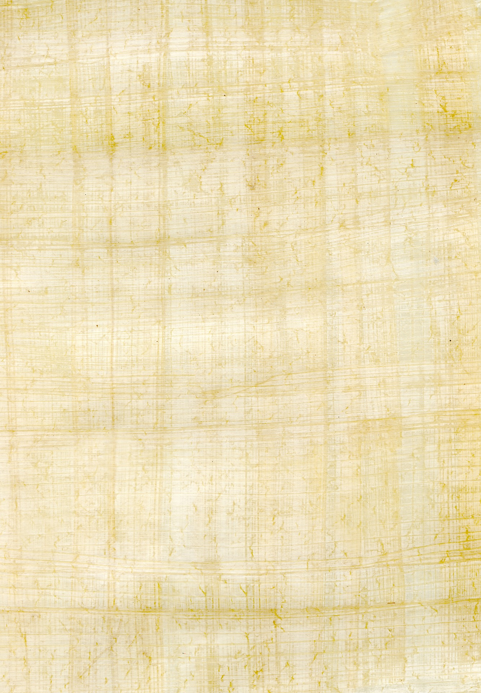

Égypte Éternelle · Dossier Thématique
Portrait d'une civilisation vivante — famille, hiérarchies, nourriture, fêtes et justice dans l'Égypte des pharaons
Structure sociale · Ordre cosmique
La société égyptienne antique n'est pas une pyramide sociale au sens moderne — elle est un ordre cosmique incarné. Chaque individu y occupe une place fixée dès la naissance, justifiée non par la fortune ou la force, mais par la volonté divine et le concept de Maât — la justice, l'harmonie et la vérité qui gouvernent l'univers depuis le premier matin du monde. Briser cet ordre, c'est menacer l'équilibre du cosmos lui-même.
Au sommet absolu trône le pharaon, fils de Rê et incarnation vivante d'Horus, dieu faucon du ciel. Sa personne est sacrée, son regard peut guérir ou maudire, et sa mort le transforme en Osiris — dieu des morts et de la renaissance éternelle. Il n'est pas un monarque au sens occidental : il est le pivot entre le monde des hommes et celui des dieux, garant de la crue du Nil, de la fertilité des champs et de la victoire militaire.
𓂀 La hiérarchie sociale égyptienne
En dessous du pharaon, le vizir (tjaty en égyptien ancien) est le pivot de l'administration. Il cumule les fonctions de premier ministre, de grand juge, de contrôleur du trésor et de superviseur des travaux publics. Le célèbre Rekhmirê, vizir sous Thoutmôsis III et Aménophis II, a fait graver dans sa tombe thébaine l'intégralité de son serment d'investiture — document unique qui nous révèle la conception égyptienne de la justice administrative : « Toute pétition sera traitée selon sa mérite, que le pétitionnaire soit pauvre ou puissant. »
Dans une société où moins de 5 % de la population sait lire et écrire, le scribe est un personnage essentiel. Il enregistre les impôts, rédige les contrats, consigne les lois et copie les textes sacrés. L'apprentissage de l'écriture commence dès l'enfance dans des « maisons de vie » (per-ankh) attachées aux temples. La Satire des métiers, texte pédagogique du Moyen Empire, détaille avec ironie tous les métiers épuisants pour mieux glorifier la condition du scribe — assis à l'ombre, propre et respecté, tandis que le forgeron « pue comme le crabe ».
Deviens scribe ! Tes membres seront lisses, tes mains douces. Tu sortiras vêtu de blanc, salué et honoré, tandis que le laboureur rentre noir de terre.
— La Satire des métiers, Papyrus Lansing, Nouvel Empire (~1300 av. J.-C.)Famille & Femmes · Une place singulière
La famille (le per — littéralement « la maison ») est l'unité fondamentale de la société égyptienne. Elle réunit sous un même toit les parents, les enfants, parfois les grands-parents, les serviteurs et les animaux domestiques. Les maisons égyptiennes, construites en briques de boue séchée au soleil, s'articulent autour d'une pièce principale servant à la fois de salle commune, de cuisine et d'espace de travail.
L'Égypte ancienne est l'une des sociétés du monde antique où les femmes jouissent du statut juridique le plus proche de l'égalité. Elles peuvent posséder des biens, hériter, divorcer, témoigner en justice et gérer des entreprises commerciales — droits que les femmes grecques ou romaines n'auront pas pendant des siècles. Les papyrus d'Eléphantine et de Deir el-Médineh témoignent abondamment de femmes signant des contrats d'achat, louant des terres et intentant des procès.
Propriété, héritage, divorce, témoignage en justice. La femme mariée conservait ses biens propres. Le contrat de mariage stipulait une compensation pour elle en cas de répudiation injustifiée.
Musicienne, prêtresse, tisserande, sage-femme, directrice de domaine. De rares femmes atteignirent les plus hautes fonctions : Hatchepsout régna comme pharaon, Néfertiti exerça peut-être une co-régence.
Le mariage est avant tout un acte contractuel civil, sans cérémonie religieuse obligatoire. Un homme pouvait avoir plusieurs épouses, mais la grande épouse (hemet weret) avait seule le statut d'épouse légitime.
𓁹 Les femmes de Deir el-Médineh
Le village d'artisans de Deir el-Médineh, fouillé exhaustivement, a livré des centaines de papyrus et d'ostraca (éclats de calcaire servant de supports d'écriture) montrant des femmes négociant du grain, louant leurs services de pleureuses et intentant des procès pour dettes. Un corpus exceptionnel pour saisir la réalité vécue des Égyptiennes ordinaires.
Vie quotidienne · Des gestes d'hier
La vie quotidienne de l'Égyptien ordinaire est profondément rythmée par deux réalités naturelles : le Nil et le soleil. La crue annuelle du fleuve — qui dépose le limon fertile, le kemet, « la terre noire » qui donne son nom à l'Égypte — détermine le calendrier agricole, lui-même calqué sur le calendrier religieux. Il n'y a pas de séparation entre nature, religion et économie : tout est un tissu continu.
La grande majorité des Égyptiens vivent dans des maisons de briques crues — mélange de limon du Nil, de paille hachée et de sable séché au soleil. Ces maisons sont fraîches en été grâce à l'épaisseur des murs et à l'orientation des ouvertures. La terrasse sert de chambre en été, de séchoir, d'espace de jeux pour les enfants. Les élites habitent de vastes demeures à colonnes, aux sols peints de motifs végétaux, entourées de jardins soigneusement irrigués plantés de figuiers, de sycomores et de lotus.
Les fouilles de Kahoun (ville ouvrière du Moyen Empire, vers 1890 av. J.-C.) ont révélé un urbanisme planifié : rues perpendiculaires, quartiers ségrégués selon la hiérarchie sociale, fosses d'aisances, canaux d'irrigation. La ville égyptienne n'est pas un organisme spontané — elle est une projection du cosmos ordonné.
Le lin est la fibre royale de l'Égypte : cultivé en abondance sur les rives du Nil, il sert à confectionner les vêtements de toutes les classes sociales. Les paysans portent un simple pagne de lin écru ; les élites arborent des robes plissées d'une finesse textile remarquable — les archéologues ont retrouvé des tissus de lin dont la densité de fil rivalise avec nos meilleures soieries modernes.
La beauté corporelle est une préoccupation partagée par hommes et femmes. Le khôl noir (à base de galène ou de malachite) souligne les yeux pour protéger du soleil ardent autant que du mauvais œil. Les huiles parfumées (myrrhe, encens, graisses animales aux essences florales) hydratent la peau et signalent le rang social. Les perruques en cheveux humains ou en fibres végétales sont un marqueur de statut : plus elles sont élaborées, plus leur porteur est élevé dans la hiérarchie.
Les Égyptiens sont les seuls peuples de la terre à avoir fait de la propreté corporelle et de l'embellissement non pas un luxe, mais une obligation religieuse et sociale quotidienne.
— Joann Fletcher, The Story of Egypt, Hodder & Stoughton, 2015Les Égyptiens possèdent une médecine d'une sophistication remarquable pour leur époque. Le Papyrus Edwin Smith (~1550 av. J.-C., mais copie d'un texte plus ancien) décrit 48 cas chirurgicaux avec une démarche quasi clinique : observation, diagnostic, pronostic, traitement. Il distingue les fractures, les luxations et les plaies avec une précision anatomique étonnante. En parallèle, le Papyrus Ebers recense plus de 700 formules médicales mêlant plantes médicinales, graisses animales, minéraux et incantations magiques — car en Égypte, le corps et l'âme ne se soignent pas séparément.
𓂀 Les animaux de compagnie
Les Égyptiens adoraient les animaux domestiques : chats, chiens, singes, ibis, gazelles. Le chat (Miou) était particulièrement vénéré, associé à la déesse Bastet. Tuer un chat, même accidentellement, pouvait être puni de mort. Des cimetières entiers d'animaux momifiés — ibis, chats, crocodiles, faucons — témoignent du soin immense accordé aux animaux sacrés.
« Vis donc heureux et sans fatigue. Ne travaille que selon tes forces et ne gaspille pas ta jeunesse. »
Alimentation · Le festin du Nil
L'alimentation égyptienne est l'une des mieux documentées du monde antique, grâce à une triple source : les fresques funéraires représentant les offrandes et les banquets, les analyses chimiques des résidus organiques retrouvés dans les amphores et les jarres funéraires, et les restes botaniques et faunistiques issus des fouilles de villages et de dépotoirs. L'image qui en ressort est celle d'une alimentation riche, diversifiée pour les élites, suffisante et répétitive pour les paysans.
Épeautre & Orge
Base du pain et de la bière
Pain (ta)
+40 variétés recensées
Bière (henqet)
Boisson nationale, légère
Poisson du Nil
Tilapia, perche, séché ou grillé
Oignons & Ail
Médicinaux et alimentaires
Légumineuses
Lentilles, fèves, pois chiches
Huile de sésame
Cuisson et lampes
Miel
Édulcorant royal, médicament
Vin (irep)
Élite du delta, importé
Viande (bœuf, canard)
Réservée aux festins et élites
Herbes aromatiques
Cumin, coriandre, fenugrec
Figues & Dattes
Sucreries du quotidien
La bière d'épeautre (henqet) est à l'Égypte ce que le vin est à la Grèce — une boisson quotidienne, nutritive, partiellement alcoolisée (entre 3 et 8° selon les analyses modernes), consommée par tous, des ouvriers de Gizeh aux prêtres de Karnak. Les papyrus de Merer mentionnent des rations quotidiennes de pain et de bière distribuées aux travailleurs des pyramides. Elle était préparée à base de pain d'épeautre fermenté dans l'eau, filtrée et parfumée à la grenade ou au miel. Sa valeur calorique était suffisamment élevée pour en faire un aliment à part entière.
Comme dans toute société stratifiée, l'alimentation reflète et reproduit les hiérarchies sociales. Les analyses ostéologiques des squelettes retrouvés dans les cimetières de Gizeh montrent clairement deux populations : les ouvriers, bien nourris en protéines animales (bœuf, mouton) selon les attentes — en partie grâce aux rations fournies par l'État —, et les paysans ordinaires, dont les ossements révèlent des carences en vitamine D, des fractures de fatigue et une usure dentaire intense liée à la consommation de pain riche en sable de mouture.
𓃀 Tabous alimentaires
Certains aliments étaient rituellement interdits selon les régions et les dieux honorés : le porc était tabou pour les prêtres d'Osiris, la perche du Nil (oxyrynque) était sacrée à Oxyrhynchos et ne pouvait être consommée dans cette ville. L'ail était banni des enceintes de certains temples. Ces interdits variaient selon les nomes (provinces) et les périodes.
Fêtes & Loisirs · La joie sous le soleil
L'image d'une Égypte austère et morbide, obsédée par la mort, est l'un des plus grands malentendus de l'histoire. Les fresques funéraires représentent certes l'au-delà, mais elles peignent un paradis qui ressemble trait pour trait à la vie terrestre idéale : banquets, musiques, jeux, jardins, chasse dans les marais. Les Égyptiens célébraient la vie avec une intensité qui surprend encore les chercheurs modernes.
Le calendrier civil égyptien de 365 jours — divisé en trois saisons de quatre mois (l'inondation, la germination, la sécheresse) — était ponctué d'environ 60 fêtes religieuses majeures. Parmi elles :
| Fête | Divinité | Durée | Signification |
|---|---|---|---|
| Fête d'Opet | Amon-Rê | 11 à 27 jours | Renouvellement de la royauté divine à Louxor |
| Fête de la Belle Fête de la Vallée | Amon | 2 jours | Procession vers les tombes, communion avec les ancêtres |
| Fête de Sekhmet | Sekhmet | 1 jour | Apaisement de la déesse, protection contre les épidémies |
| Wepet-Renpet | Tous les dieux | 5 jours épagomènes | Nouvel An, anniversaire des cinq grands dieux |
| Fête de Sokar | Osiris/Sokar | 6 jours | Mystères de la résurrection, défilé des barques sacrées |
Les banquets des élites sont des événements sociaux codifiés : les invités reçoivent des cônes de graisse parfumée à poser sur leurs perruques (ils fondaient lentement en répandant leur parfum), des colliers de fleurs de lotus, et sont servis par des servantes en robes translucides. La musique y est omniprésente : harpe, luth, double hautbois, sistres, tambourins. Les fresques de Thèbes montrent des ensembles féminins jouant et chantant avec une virtuosité évidente.
Le jeu du senet — plateau de 30 cases sur lequel deux joueurs s'affrontent avec des pions et des dés-bâtons — est le jeu de société le plus ancien et le plus répandu. On en a retrouvé dans des tombes royales (Toutankhamon en possédait plusieurs jeux magnifiquement décorés) comme dans les huttes des paysans. Il acquit avec le temps une dimension spirituelle : jouer au senet contre un adversaire invisible symbolisait le voyage de l'âme dans l'au-delà.
𓊹 La Belle Fête de la Vallée
Cette fête thébaine unique permettait aux familles de passer une nuit entière dans le tombeau de leurs ancêtres, mangeant, buvant et chantant en leur compagnie. La frontière entre vivants et morts s'effaçait le temps d'une nuit — conception radicalement différente de la mort comme tabou, et qui révèle la sérénité profonde des Égyptiens face à la finitude.
Justice & Loi · L'ordre de Maât
En Égypte ancienne, la justice n'est pas séparée de la cosmologie. Maât — déesse à la plume d'autruche, concept d'ordre cosmique, de vérité et de justice — est le fondement de toute organisation sociale et juridique. Rendre la justice, c'est restaurer Maât là où l'injustice a troublé l'harmonie du monde. Le pharaon est le garant suprême de Maât : il en est à la fois le dépositaire et l'exécuteur.
Le système judiciaire s'organise en échelons. Au niveau local, les kenbet (tribunaux locaux) gèrent les litiges courants : disputes de voisinage, contrats non respectés, vols mineurs. Les archives de Deir el-Médineh (le village des artisans de la Vallée des Rois) sont une source exceptionnelle : elles montrent un système judiciaire local réellement fonctionnel, où les plaignants — y compris des femmes — comparaissent, présentent leurs témoins et obtiennent des sentences. Pour les affaires graves (meurtre, trahison, violations des tombes royales), les tribunaux royaux ou le grand vizir lui-même rendaient la justice.
En l'an 29 du règne de Ramsès III (~1170 av. J.-C.), les ouvriers de Deir el-Médineh cessent le travail et marchent vers les temples funéraires royaux — première grève documentée de l'histoire. La raison : leurs rations de grain n'ont pas été distribuées depuis plusieurs mois. Les papyrus retrouvés consignent leurs revendications précises et la négociation qui s'ensuivit. Ce document montre une société où même les plus humbles avaient conscience de leurs droits et des obligations de l'État envers eux.
J'ai faim, j'ai faim, j'ai faim. Il y a déjà dix-huit jours que nous avons passé ce mois sans recevoir nos rations.
— Papyrus de la grève de Deir el-Médineh, an 29 de Ramsès III, ~1170 av. J.-C.Le système pénal égyptien prévoit une gamme de sanctions allant de l'amende à la mutilation, en passant par les coups de bâton (bastonnade) et les travaux forcés dans les mines de Nubie ou de Sinaï. La peine de mort est réservée aux crimes les plus graves : meurtre, trahison, profanation des tombes royales. La pendaison et l'empalement sont attestés. Le Procès de la Conspiration du Harem, sous Ramsès III, illustre ce processus : une vingtaine de conspirateurs jugés pour tentative de meurtre du pharaon se voient condamner à mort ou autorisés à se suicider pour préserver l'honneur de leurs familles.
𓂀 Le jugement de l'âme
La justice ultime était celle de l'au-delà. Après la mort, l'âme du défunt comparaissait devant le tribunal d'Osiris dans la Salle des Deux Vérités. Son cœur était pesé sur une balance contre la plume de Maât. Si le cœur était plus lourd que la plume — alourdi par les fautes commises — la créature Ammout le dévorait et l'âme disparaissait pour toujours. Ce jugement moral touchait tous les Égyptiens, du paysan au pharaon.
𓂀 Sources & Lectures recommandées